QubitMCP
Build AI-assisted creative, production, mocap, asset, and Unreal workflows with a visual graph, a 3D viewport, librarian tools, voice automation, and a growing node ecosystem.
Download and Links
Windows Setup
Run setup.bat once to create the app environment, install dependencies, and check optional runtime support.
Source Repository
Open the repository for source access, issue tracking, release notes, and partner evaluation.
github.com/QuantalityFX/QubitMCPManual
Continue below for setup, workflows, viewport controls, node coverage, pipelines, and troubleshooting.
Read the manualOverview
- Node graph editor with links, grouping, and per node info cards.
- 3D viewport with camera controls, grid, wireframe, and gizmos.
- AI stack with Local Server, LLM Prompt, Chatbot, Voice Actor, Audio Capture, Mediator, Database, Librarian, and Qubit Deck control.
- 3D stack with import, FBX ingest, mocap ingest, Gen-X video mocap, retargeting, primitives, curves, modeler selection, lighting, texturing, masks, normals, transforms, scene assembly, render, post-process, and export nodes.
- Character and hair stack with groom guides, guide deformation, guide pose/simulation, guide tubes, skinned volume collision meshes, and skinned splat render proxies.
- Automation stack with Keyboard Sequence actions, Serial COM/Pico HID support, and voice-driven Qubit Deck commands.
- Configurable hotkeys saved in
hotkeys.json.
Latest Updates
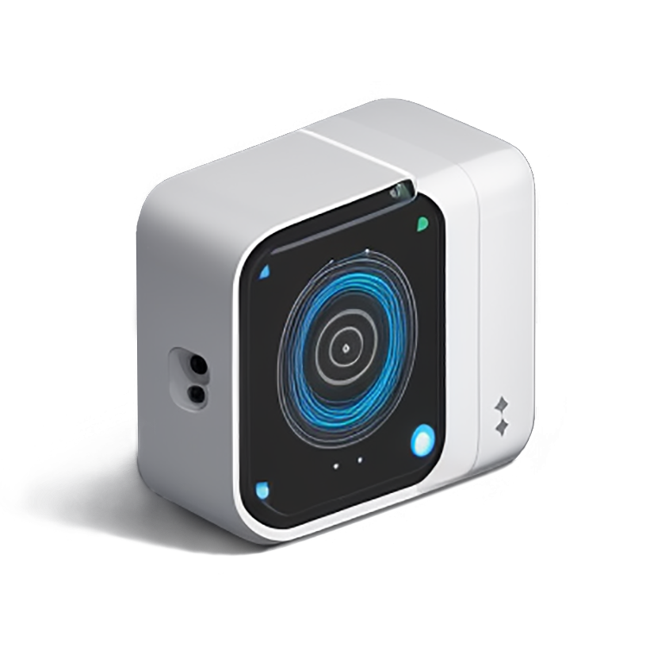
Voice Actor Send Modesvoice_actornow supports Auto Respond, Ask First, and Manual response modes per node.- Auto Respond sends after speech pauses, Ask First confirms before sending, and Manual sends only when Stop is pressed.
- Voice Actor can read chatbot output or Mediator output, including Mediator output passed through a Python cleanup node.
Mediator Agent Integration
mediator_agentreplaces the older legacy node kind while preserving aliases for existing workflows.- Mediator only processes on fresh Voice Actor send events, avoiding accidental reruns when a node is selected, moved, loaded, or reconnected.
- The Qubit Deck controller profile can append
<user_feedback>...</user_feedback>text for spoken status updates. - A Python-node helper can extract only the feedback tag when the full Mediator JSON should not be spoken aloud.
- Mediator prompt logs are capped and console logs are kept to a managed tail so log files do not grow without limit.
 Qubit Deck Controller
Qubit Deck Controller
qubit_deck_controllercan list deck context or execute button actions from structured Mediator JSON.- Executor mode supports invoke, highlight on/off, list buttons, health ping, and debugger launch actions.
- The new visible input is
mediator_input; oldermedigator_inputworkflows still load.
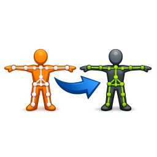
Mocap Retargeting Systemfbx_import,mocap_import, andanim_retargetsupport a source/target retargeting workflow.- FBX import validates rest geometry, capture pose, and animated pose roles.
- Mocap import validates BVH sources and reports skeleton/clip summaries.
- Anim Retarget connects a mocap or FBX animation source to a target FBX rig with joint mapping and preview controls.
Render, Post Process, and MP4 Export
post_processapplies image-sequence effects such as ordered dithering to render or video frame sequences.sequence_to_mp4converts image sequences to MP4 through ffmpeg with codec, FPS, and bitrate controls.video_playerandrendercan be used with these nodes for review and delivery pipelines.
Keyboard Auto Runner
keyboard_sequencebuilds timed keyboard action sequences from the graph.- Actions include configurable lead-in, per-key hold time, action delay, and injection mode.
- Use it for repeatable app-control steps after QubitMCP brings the target app into focus.
Gantt Multi-Note Groups
- Gantt now supports multiple connected
notesources at once. - Each note node becomes a collapsible group using the note node name as the group header.
- Group expand or collapse state is saved and restored with the workflow.
- Gantt can consume an
appendnode input and preserve append order as group order.
Gantt Copy/Paste Scheduling
- Copy captures task names, completion percentages, and assigned day ranges.
- Copy writes a CSV transfer log in
gantt_chart/transfer_logs. - Paste maps by task name and applies schedule/progress to matching tasks on another Gantt node.
- Transfer works even when the destination chart has additional note groups connected.
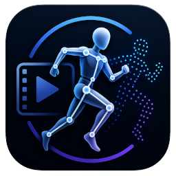
Gen-X Video Mocapgenx_video_mocapruns the GEM-X/GEN-X video mocap pipeline from a video file.- Rig export targets include SOMA BVH and Unitree G1 output options.
- Successful runs can create a connected
mocap_importnode from the generated BVH.
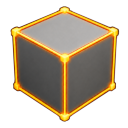
Modeling and Instancing Helpersmodeleradds an outliner for object, point, edge, and face selection groups.curvegenerates line, circle, and spiral scene assets.copy_to_pointsinstances copy geometry onto point inputs with optional material or texture propagation.
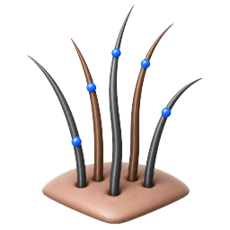
Grooming Pipelinemaskpaints mesh masks used to seedgroom_guides.groom_deform,groom_guide_pose, andgroom_guide_simbind, pose, and simulate guide curves.groom_guide_tubeconverts guide curves into tube geometry with radius, caps, smoothing, and profile controls.
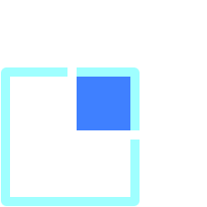
Skinned Mesh and Splat Proxiesskinned_volume_meshbuilds voxel-derived collision meshes from rigged FBX or retargeted character data.skinned_splat_proxycreates skinned splat render proxies from FBX, retarget, or guide tube sources.- Generated proxy manifests and caches are stored beside the workflow or in the configured output folder.
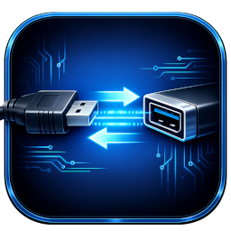
Serial and Pico HID Controlserial_comstores COM port, baud rate, and timeout settings for downstream automation.- Keyboard automation can use connected Pico serial sessions for key taps, key-down/release, and mouse commands.
- The node can prompt for
pyserialwhen the runtime dependency is missing.
Audio Capture Sources
audio_capturecaptures output-device, input-device, or application audio.- Controls include backend selection, sample rate, threshold, silence window, and phrase duration.
- Use it to feed speech/audio workflows that need captured system or microphone audio.
Quick Start
- Run setup once with
.\setup.bat. - Launch with
.\Run_QubitMCP.bator runechograph_app.pyfrom the project venv. - Create nodes with Create - Node or press Tab.
- Connect outputs to inputs by dragging from one port to another.
- Select a node to edit parameters in the info panel and run its actions.
Setup and Launch
Run from repository root: V:\Source\Repos\QubitMCP.
One time setup
setup.bat- Creates or repairs
.venvfor the app. - Creates or repairs
nodes\librarian\.venvfor librarian service dependencies. - Installs
requirements.txtandnodes\librarian\requirements.txt. - Upgrades packaging tools in each venv (
pip,setuptools,wheel). - Checks bundled ffmpeg support used by
sequence_to_mp4. - Installs voice dependencies used by
voice_actor, including local Whisper and TTS support when available. - Installs or checks audio capture dependencies used by
audio_capture. - Runs a
keyboard_sequencesanity check so Keyboard Auto Runner can load its runtime. - Checks Serial COM dependencies used by Pico/COM automation paths.
- Checks Mediator runtime support for
tools\codex.ps1, Node.js, andnpx. - Checks or prompts for Autodesk FBX SDK runtime files used by full FBX import and retargeting workflows.
Optional Gen-X video mocap setup
Mocap\setup.batUse the Mocap setup when genx_video_mocap needs the GEM-X runtime and its dedicated environment.
Optional FBX SDK setup
setup.bat full "C:\path\to\fbx_runtime"FBX runtime source folders can contain either fbx-*.whl plus FbxCommon.py, or fbx*.pyd plus FbxCommon.py and optional libfbxsdk.dll.
Launch app
Run_QubitMCP.bator
.\.venv\Scripts\python.exe .\echograph_app.pyOptional venv activation
.\.venv\Scripts\Activate.ps1Activation is optional because scripts call the venv python directly.
UI Tour
Top Bar
- File: New, Open, Open Recent, New Project, Save, Save As.
- Edit: Preferences for ModernGL gizmo tip overlays and tip scale.
- Create: open the node creation dialog.
- Panels: Timeline, Audio, Profiler, Shelf, and Save Layout.
- Settings: viewport, lighting, shadow, audio, layout, and debug tuning.
- Hotkeys, Help, Frame, Debug, and the active 2D / Split / 3D view mode button.
Main Areas
- Graph Canvas: nodes, wires, and comment frames.
- 3D Viewport: asset preview and scene assembly.
- Info Panel: parameters, buttons, previews, and node tools.
Top Shelf
- The shelf is the row directly below the top bar and can be shown or hidden from Panels -> Shelf.
- Use the Add shelf tool button to add Python Script, Python Code, Current Workflow, Selected Nodes, or Copied Nodes.
- Shelf tools can run code, open saved workflows, or paste graph snippets depending on tool type.
- Right-click a shelf item for Run/Open/Paste, Edit, Duplicate, Move Left, Move Right, and Remove.
- Drag shelf items to reorder them; shelf configuration is stored in
shelf_tools.json. - Missing tool paths are shown with warning styling so broken script/workflow shortcuts can be repaired from Edit.
Workflows
- Workflows are saved as JSON.
- Open Recent provides quick access to recently edited workflow files.
- Save preserves graph layout, parameters, links, and related state.
- Hotkey overrides are stored in project root
hotkeys.json.
Graph Basics
Mouse Controls
- Left click: select nodes and start links.
- Middle drag: pan graph.
- Right drag: zoom graph.
- Alt + Left click on a wire: remove wire.
Editing
- Use Tab to open Create Node.
- Copy and paste with standard shortcuts.
- Use comment groups to organize complex graphs.
3D Viewport
- Used by Import, Scene, and scene related processing nodes.
- Supports camera frame, reset, fly mode, and focus workflows.
- Displays mesh and splat assets through the active graph path.
- Scene workflows support per asset transforms and visibility states.
Gizmos and Transforms
- Translate (T), Rotate (R), Scale (E).
- Applies to selected items in the viewport and scene workflows.
- Transform data participates in scene assembly and export chains.
Viewport Controls
- Left viewport toolbar includes quick icons for Frame, Snapshot, Gizmo Space (World/Local), mesh selection tools, Grid, Zoom Mode, transform tools, Camera Orbit, Fly Mode, and Stats with Copy Stats.
- Transform tools (Translate/Rotate/Scale) are available in viewport workflows and map to T, R, and E.
- Grid toggle provides orientation and scale reference.
- Wireframe toggle, default hotkey H.
- Gizmo visibility toggle for clean previews.
- Snapshot capture tools for scene reviews.
- Stats overlay toggle in the 3D viewport side controls shows FPS and render/debug details, with a copy-stats action for quick reporting.
- Viewport lighting is controlled from the top bar Settings panel: Shadow Quality, Cast Shadows, Self Shadows, Ambient Light, Work Light, Unlit View, and 2-Sided Shadows.
Viewport Left Panel
- The left panel is a fast-access icon strip for camera/view actions and viewport toggles.
- Object, Point, Edge, and Face selection modes are mutually toggled selection tools for mesh inspection and modeler workflows.
- Box Select enables rectangular element selection; right-click it for front/back face selection policy.
- Point Numbers overlays point IDs for debugging selections, groom bindings, and point-based workflows.
- Zoom toggle uses
GizmoZoom_On_Icon.png/GizmoZoom_Off_Icon.pngfor Infinite vs Legacy zoom mode.
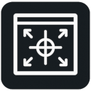
Frame Selection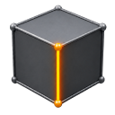
Edge Select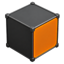
Face Select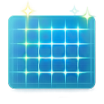
Grid Toggle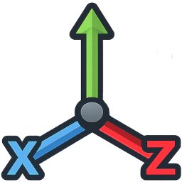
Translate / Rotate / Scale Tools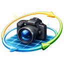
Camera Orbit Lock/FreeAnimation Timeline
- Open from top bar Panels -> Timeline.
- If you enable timeline while in 2D mode, QubitMCP auto-switches to Split view.
- Keyframing channels include
Px,Py,Pz,Rx,Ry, andRz. - Use
ply_sequencefor frame-by-frame PLY playback workflows that sync well with timeline scrubbing. - Use
mocap_import,fbx_import, andanim_retargetfor skeleton/animation retargeting workflows before scene preview or render. - Timeline sessions are context-aware and load per active scene (and selected scene owner when applicable).
- Use [ and ] controls for start/end range and the loop control for playback looping.
Curves Mode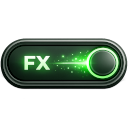
FX Instances ToggleAudio Panel
- Open from top bar Panels -> Audio (enabling Audio also enables Timeline).
- Audio panel appears above the timeline with Load Audio, Clear, and mute controls.
- Supported picker filter includes common formats like
wav,mp3,ogg,flac,aac, andm4a. - Waveform playhead syncs to timeline frame and FPS during playback and scrubbing.
- Audio file path + mute state are persisted per scene context in project-side timeline config files.
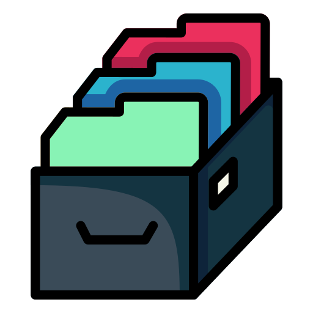
Load AudioProfiler Panel
- Open from top bar Panels -> Profiler; the panel appears above the 2D graph.
- Start begins a profiler capture and turns into the stop control while recording.
- Clear removes the last profiler capture from the panel.
- Export writes the latest capture under
logs\Profiler. - Processes tab shows process/span timing with calls, total milliseconds, average milliseconds, and max milliseconds.
- Python tab shows Python function calls, cumulative time, and self time.
- The bottom resize handle lets you adjust the profiler height while keeping the graph usable.
Panel Layout Presets
- Use top bar Panels menu for quick panel visibility controls: Timeline, Audio, Profiler, Shelf, and Save Layout.
- Save Layout stores current panel visibility as the app-global default layout preset.
- Settings menu includes Auto Save Layout to automatically persist panel visibility changes.
- Global layout state is persisted in
app_settings.json. - Workflow files also store panel visibility under
settings.panel_layoutand restore it on load.
<workflow folder>\projects\, for example
<scene>_timeline.json,
<scene>_timeline_range.json, and
<scene>_audio.json.
Hotkeys (Default)
All bindings are editable in the Hotkeys dialog and persisted to hotkeys.json.
| Action | Key |
|---|---|
| Save | Ctrl+S |
| Undo / Redo | Ctrl+Z / Ctrl+Y |
| Copy / Paste Node | Ctrl+C / Ctrl+V |
| Delete Node | Del |
| Create Node Menu | Tab |
| Comment Group | C |
| Open Big Editor | Ctrl+B |
| View Selected Node (Import/Scene) | V |
| Frame View | F |
| Reset 3D View | Shift+R |
| Gizmo Translate / Rotate / Scale | T / R / E |
| Wireframe Toggle | H |
| Grid Toggle | G |
| Timeline Play / Pause | Space |
| Timeline Set Key | K |
| View Mode 2D / Split / 3D | 1 / 2 / 3 |
| Add Wire Pin | Ctrl+LeftClick |
| Remove Wire | Alt+LeftClick |
Settings
Viewport Navigation
- Local Server Scale: scales Local Server node presentation.
- Pan Base, Pan Exp, and Pan Boost: tune graph/viewport panning response.
- Gizmo Zoom: adjusts transform gizmo zoom sensitivity.
- Fly Speed: scales fly-mode navigation speed.
- Wire Color: opens a color swatch for wireframe rendering.
Lighting and Shadows
- Shadow Quality: choose Low, Medium, High, or Ultra shadow map quality.
- Cast Shadows: enables meshes and splats casting shadows into the scene.
- Self Shadows: lets a mesh receive its own shadow; turn it off to keep shadows from other objects while removing self-shadow artifacts.
- Ambient Light: toggles the renderer base fill light.
- Work Light: keeps normal-based lighting while bypassing viewport shadow darkening and adding fill light for modeling.
- Unlit View: draws viewport meshes without light shading or shadow darkening.
- 2-Sided Shadows: casts shadows from front and back faces, useful for thin or closed geometry.
Debug and Skeleton Display
- Debug Log: toggles splat/viewport diagnostic logging.
- Joint Names: shows visible skeleton joint names in the 3D view.
- The top bar Debug menu separately controls EchoGraph log and viewport debug state.
Layout and Voice Audio
- Auto Save Layout: automatically captures panel visibility and view mode as the global default.
- Turn-Taking Audio: pauses microphone capture while another actor speaks; disabling it allows bilateral mic and speaker behavior.
- Microphone: selects the speech recognition microphone device when available.
- The refresh icon at the top of Settings resets settings back to defaults.
Node Catalog
Current kinds available from Create Node and plugin registration.
Core and Utility
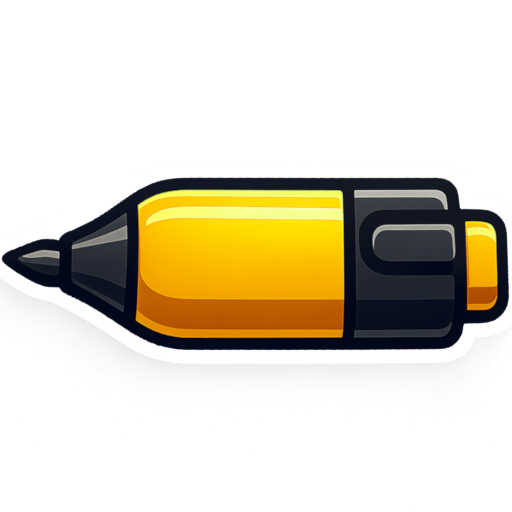
note: note tasks and text content with per-parameter controls.- node: standard general purpose parameter node.
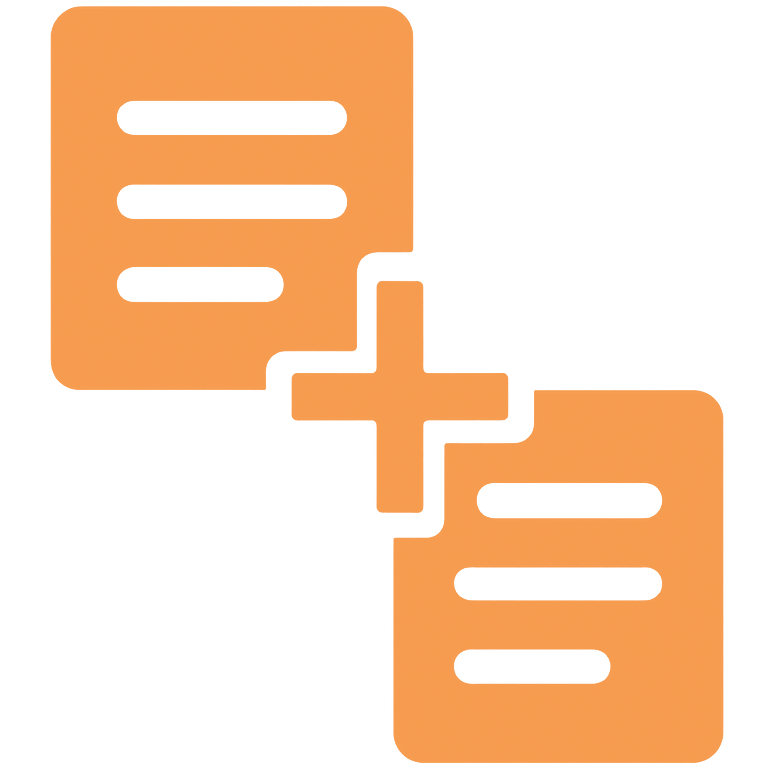
append: ordered input aggregation; can now drive Gantt group order.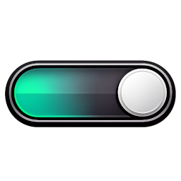
switch: single-branch selection from multiple upstream nodes.- gantt_chart: scheduling board with multi-note grouping, collapse state persistence, and CSV copy/paste transfer.
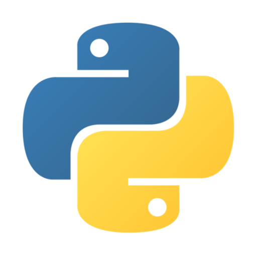
python: run custom scripts in graph context.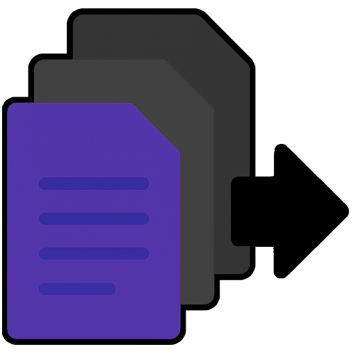
output: terminal collector for final graph output.
AI and Knowledge
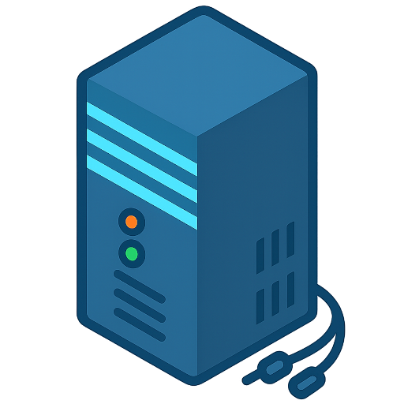
local_server: local server endpoint configuration.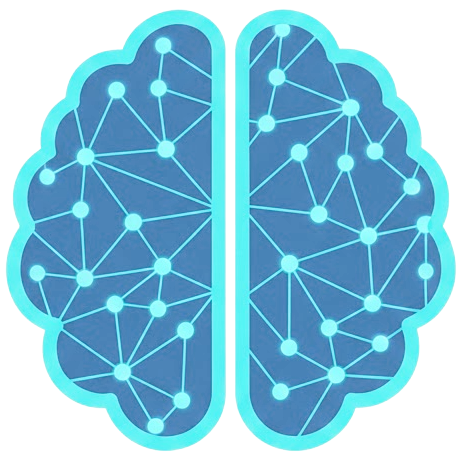
llm_prompt: prompt execution and response generation.- chatbot: conversation workflows with memory/history support.
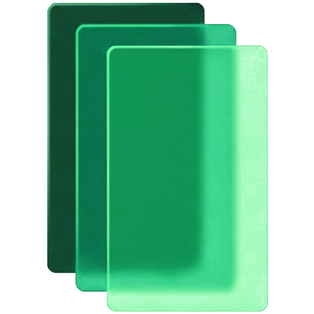
database: persistence layer for graph and chat data.- librarian: document indexing, search, summarize, and analysis.
Automation, Voice, and Control
- voice_actor: speech-to-text and text-to-speech node with Auto Respond, Ask First, and Manual send modes.
- audio_capture: captures output device, input device, or application audio with backend, sample-rate, threshold, silence, and phrase controls.
- mediator_agent: Codex-backed mediator that processes voice input, prompt profiles, and Qubit Deck controller commands.
mediator_input.- keyboard_sequence: Keyboard Auto Runner for timed key/action sequences with lead-in, hold time, delays, and injection mode.
- serial_com: stores COM port, baud, and timeout settings for serial/Pico HID automation paths.
3D, Rigging, and Scene Processing
- import: load mesh or splat assets.
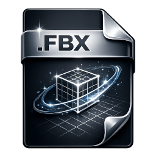
fbx_import: ingest and validate FBX rest geometry, capture pose, and animated pose roles for rigging workflows.- genx_video_mocap: run GEN-X/GEM-X video mocap and create downstream BVH import nodes.
- mocap_import: import and validate BVH mocap clips with skeleton, frame, and clip summaries.
- anim_retarget: connect a mocap/FBX source to a target FBX rig with joint mapping, root controls, pose offsets, and preview options.
- camera: scene camera placement/control node.
- light: directional, point, spot, and area light setup with intensity, range, and shadow parameters.
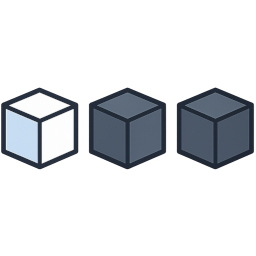
instance: create repeated scene instances.- copy_to_points: copy source geometry onto point inputs with instancing and material/texture support.
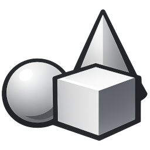
primitive: generate procedural primitive geometry.- curve: create line, circle, or spiral curve scene assets.
- modeler: inspect model object names, hide/isolate submeshes, and save object/point/edge/face selection groups.
- transforms: apply translate/rotate/scale offsets in-chain.
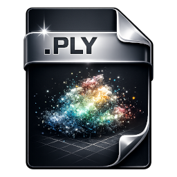
ply_sequence: sequence playback/control for PLY streams and splat frame workflows.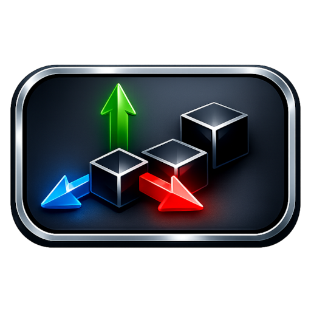
scene: assemble and manage multi-asset scenes.- export_fbx: export scene geometry to FBX.
- export_fbx_animation: export validated FBX rigs with skeletons, skinned meshes, animation ranges, FPS, and optional joint-scale curves.
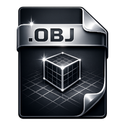
export_obj: export to OBJ/MTL.
Mesh, Materials, and Grooming
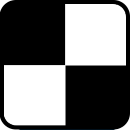
uv_unwrap: UV workflow stage.- normals: smooth mesh normals and cache an updated OBJ for downstream texture, mask, and scene workflows.
- texture: base texturing stage.
- texture_pro: expanded texture processing controls.
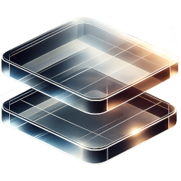
texture_layer: layered texture compositing.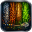
material: material setup and conversion utilities.- mask: paint foreground/background mesh masks with brush, falloff, invert, clear, and preview controls.
- split_volume / volume_selector: filter/split geometry by volume.
- fx: post-process and trail-style pipeline stage.
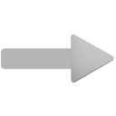
wire: wire and curve-based geometry path workflows.- groom_guides: generate guide curves from a painted mask and source mesh, with guide count, length, segments, seed, and threshold controls.
- groom_deform: bind guide curves to FBX/retarget rigs and optionally hide the deformer geometry.
- groom_guide_pose: pose guide curves from animation frames with XPBD-style strand settings and optional GPU support.
- groom_guide_sim: simulate guides with start frame, FPS, substeps, iterations, stretch, bend, damping, gravity, wind, and optional collider input.
- groom_guide_tube: convert guide curves into tube geometry with root/tip radius, profile ramp, sides, subdivisions, caps, smoothing, and source-guide display.
- skinned_volume_mesh: generate skinned voxel collision meshes from rig contexts for grooming simulation and viewport collision.
- skinned_splat_proxy: generate skinned splat proxies from retargeted rigs, FBX imports, or guide tubes with sample count, influence, radius, auto-generate, and color-mode controls.
Media and Review
- html_preview: in-node HTML rendering.
- image_collection: assemble and preview image sets.
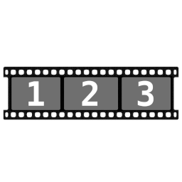
video_player: timeline playback and clip inspection.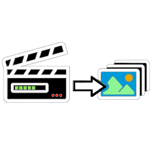
render: render sequence/export pipeline stage.- post_process: apply image-sequence effects such as ordered dithering and produce an output frame pattern.
- sequence_to_mp4: encode image sequences to MP4 with FPS, codec, and bitrate settings.
Aliases also exist for many node kinds, including scene_assembly, scene_outliner, exportfbx, export fbx animation, video player, bvh_import, retarget, gpt_prompt, copy to points, hair guides, guide_tube, serial_port, and legacy medigator_agent.
Common Pipelines
Scene Assembly and Export
- Create
import,fbx_import,primitive,curve, ormodelernodes. - Optional processing:
normals,uv_unwrap,texture/texture_pro/texture_layer,material,split_volume,transforms, oranim_retarget. - Use
instanceorcopy_to_pointswhen you need repeated assets. - Add
cameraandlightnodes when the scene needs explicit shot and lighting control. - Connect into
sceneand review in 3D viewport. - Finish with
export_fbx,export_fbx_animation, orexport_objfor DCC handoff.
Librarian and LLM Workflow
- Create
librarianand set docs path. - Build or load librarian index and run search or summarize.
- Use
llm_promptorchatbotfor response generation. - Attach
databasefor persistence andappendplusoutputfor final aggregation.
Task Planning Workflow (Gantt)
- Create one or more
notenodes with task parameters. - Optional: combine notes through
appendand use append order to control Gantt group order. - Connect to
gantt_chartand assign dates or progress per task row. - Use collapse or expand on note groups to focus planning.
- Use copy/paste buttons to transfer schedule + progress into another Gantt chart instance.
Voice-Controlled Qubit Deck
- Create
voice_actor, set its response mode, and connect its output tomediator_agentvoice_input. - Set Mediator prompt profile to
qubit_deck_controller. - Connect Mediator output to
qubit_deck_controllermediator_input. - Optional: place a
pythonnode between Mediator and Voice Actor to extract only<user_feedback>text for speech. - Use
qubit_deck_controllerin Context mode to list buttons, then Executor mode to invoke or highlight actions.
FBX + Mocap Retargeting
- Create
fbx_importand assign rest geometry, capture pose, and optional animated pose FBX sources. - Create
mocap_importand browse to a BVH file, then validate the clip. - Connect mocap or animated FBX into
anim_retargetsource. - Connect the target rig
fbx_importintoanim_retargettarget. - Validate mapping, adjust root/scale/rotation settings, preview, then continue to scene/render/export stages.
- Use
export_fbx_animationwhen you need a rigged FBX animation file instead of a static scene export.
Video to Mocap
- Run
Mocap\setup.batonce for the GEM-X/GEN-X environment. - Create
genx_video_mocapand browse to an MP4, MOV, AVI, MKV, or WebM source. - Choose the rig export target, such as SOMA BVH or Unitree G1.
- Run the node and let it create a
mocap_importnode from the latest generated BVH. - Retarget that mocap through
anim_retargetfor viewport, render, or FBX animation export.
Render Review and Video Output
- Build a
scenefrom import, retarget, transform, material, or texture nodes. - Use
renderto produce an image sequence. - Optional: connect the sequence to
post_processfor dither/grayscale style processing. - Preview frames or clips with
video_player. - Finish with
sequence_to_mp4for MP4 delivery.
Keyboard Auto Runner
- Create
keyboard_sequenceand add key/action rows. - Set lead-in delay so you have time to focus the target application.
- Choose injection mode and per-key hold timing for the target app.
- Optional: connect
serial_comfor Pico-backed HID commands when the target workflow needs hardware input. - Run the sequence, or stop it if the target app state changes.
Audio and Voice Capture
- Create
audio_captureand choose output-device, input-device, or application source mode. - Select the device/backend and tune threshold, silence window, phrase duration, and sample rate.
- Use
Testto confirm signal detection. - Route captured audio or transcribed text into
voice_actor,chatbot, ormediator_agentworkflows as needed.
Mask to Groom Guides
- Load a mesh through
import,fbx_import, or a compatible processed mesh node. - Connect into
maskand paint the scalp or emission region. - Connect
masktogroom_guidesand set count, length, segments, threshold, and seed. - Use
groom_deformto bind guides to a retargeted rig when animated deformation is needed. - Use
groom_guide_pose,groom_guide_sim, orgroom_guide_tubefor posed, simulated, or tube-geometry output.
Skinned Collision and Splat Proxies
- Start from
fbx_importoranim_retargetso a rig context is available. - Use
skinned_volume_meshto generate a voxel-derived collision mesh for guide simulation. - Use
skinned_splat_proxyto generate render proxies from a rig source or fromgroom_guide_tube. - Connect the generated asset into
scenefor viewport review or into render/export nodes for delivery.
Troubleshooting
- Setup issues: check
setup.logat repo root after runningsetup.bat. - Librarian launch issues: run
nodes\librarian\librarianSetup.batand reviewnodes\librarian\librarian_child.logandnodes\librarian\librarian_crash.log. - Hotkey mismatch: open Hotkeys dialog and confirm bindings, or regenerate
hotkeys.json. - Wireframe default is
H; if not, verifygl_wireframe_toggleinhotkeys.json. - Gantt copy/paste debugging: inspect CSV transfer logs under
gantt_chart\transfer_logs. - If Gantt group order is stale after append reorder, press Apply Order on the append node so downstream charts refresh.
- FBX import or retarget validation issues: run
check_fbx_sdk.ps1, or rerunsetup.bat full "C:\path\to\fbx_runtime"with the Autodesk FBX runtime folder. - Sequence to MP4 issues: confirm setup reported bundled ffmpeg as ready, or install ffmpeg on
PATH. - Voice Actor speech issues: rerun
setup.batso voice dependencies are installed; Local Whisper requiresfaster-whisper, Tanya/Google voice usesgTTSpluspygame, and Japanese Kokoro-82M requires the bundledunidic-liteMeCab dictionary. - Audio Capture issues: rerun
setup.bat; output-device capture needssoundcardplusnumpy, and input-device capture needs a working audio backend such as PyAudio. - Mediator issues: confirm Node.js,
npx, andtools\codex.ps1are available; Mediator logs are underlogs\mediator_agents. - Qubit Deck control issues: use
qubit_deck_controllerContext mode first to confirm button names before sending Executor JSON from Mediator. - Keyboard Auto Runner issues: make sure the intended target app has focus before the lead-in delay ends, increase key hold time for apps that miss fast input, and check connected
serial_comnodes when Pico HID output is enabled. - Serial COM issues: install
pyserialthrough the node prompt or rerunsetup.bat, then confirm the COM port, baud rate, and timeout match the target device firmware. - Gen-X video mocap issues: run
Mocap\setup.bat, confirm the selected video exists, and check the configured output root for generated BVH files. - Normals, masks, and grooming issues: confirm the upstream mesh path exists and uses a supported mesh extension (
.obj,.fbx,.gltf, or.glb); Groom Guides also needs a painted Mask input. - Skinned volume or splat proxy issues: confirm the upstream
fbx_importoranim_retargetsource exposes a valid rig context, then regenerate when settings or source files change.
Developer Guide (High Level)
- Node specs are registered through
nodes/coreand plugin bootstrap innodes/loader.py. - Create Node kinds are defined in
echograph/ui/dialogs.py. - Hotkey defaults are in
echograph/ui/hotkeys_config.pyand merge with roothotkeys.json. - Workflow files persist graph structure and node parameters as JSON.
- Librarian service runs out of
nodes/librarian/.venvas a separate process. - Voice Actor uses hidden event tokens so downstream automation only reacts to fresh send events.
- Mediator prompt profiles live under
nodes\mediator_agent\prompts; the Qubit Deck profile emits command JSON plus optional<user_feedback>text. - Python helper scripts in
scripts\can be pasted into Python nodes for output cleanup, including user feedback extraction for voice playback. - Rigging and retargeting helpers live under
echograph\riggingand are surfaced throughfbx_import,mocap_import, andanim_retarget. - Grooming and skinned proxy helpers also live under
echograph\riggingand are surfaced throughmask,groom_guides,groom_deform,groom_guide_pose,groom_guide_sim,groom_guide_tube,skinned_volume_mesh, andskinned_splat_proxy. - Gen-X video mocap integration uses the
Mocap\GEM-Xruntime and can createmocap_importnodes after successful BVH generation. - Serial/Pico automation helpers are exposed through
serial_comand consumed by downstream automation paths such askeyboard_sequence.